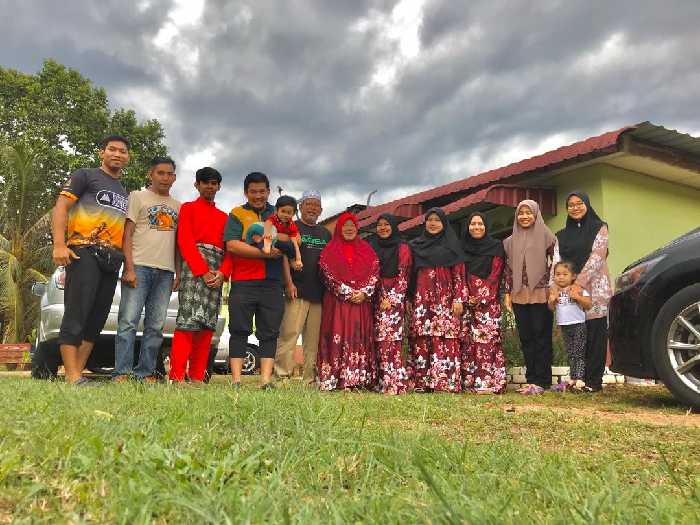
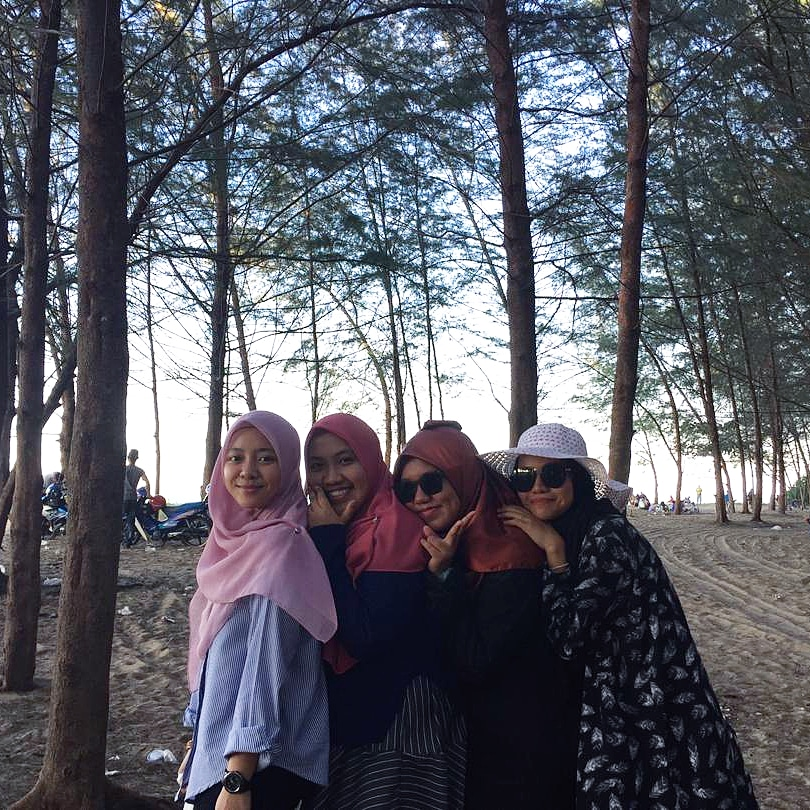

My name is Nurul Syaqinah binti Suhaimi. I'm 22 years old. Born on 20th June 1998 at Shah Alam, Selangor.
I was raised in Pahang by my lovely parents. I have 4 brothers and 2 sisters that are always there for me through my ups and downs.Now, I have extra 4 person in my life.
My 2 sisters-in-law, my niece Mikayla and my nephew Umar. Hoping for more new family members to come.

I finished my Diploma in Accountancy in 2019 at UiTM Campus Jengka, Pahang with quite a good result.
Now, I'm pursuing my Bachelor's Degree in Business Administration (Hons) Marketing at UiTM Campu Kota Bharu, Kelantan.
I wish to learn as much as I can through this degree.
I love traveling with my friends. The location doesn't necessarily be exclusive. I like going to calming places like the beach.
I love the breeze lightly hitting my face. Before the pandemic outbreak, I had a blast visiting beaches at Kelantan with my friends.
I wish to go on a new trip once the everything is fine.

My Strengths
Social Media Management
As a marketing student, I have learned a lot about social media. I am quite reliable in handling social media accounts and creating amazing copywriting.
Knowledge and experience during my studies helped me a lot in understanding the opportunities of social medias.
Knowing that, I sometimes spend times learning on my own the features provided by each social media platforms and how take take advantage of those features when it comes to marketing.
Leadership and Teamwork
Throughout my studies, I also joined a lot of programs that gace me a chance to meet and interact with new people.
The programs thought me leadership and teamwork that are very important in my future working field.
I can see myself as a teamplayer that is ready to lead and to be led.
Photo Editing Skills
I recently started learning using a few software programs to learn new things.
I believe in this digital era, having skills related to technology is a great benefit.
I learned photo editing using GIMP and Photoshop through YouTube videos that teaches me the basic of photo editing.
Although I'm new in editing, I want to improve myself more and more.

 MY BIODATA 2020
MY BIODATA 2020